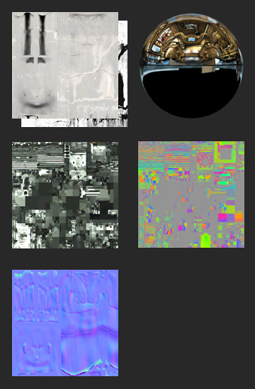

渲染优化
本部分将介绍渲染优化的技术细节，展示如何烘焙光照结果以获得更好的性能，并说明《暗影之枪》(Shadowgun) 的开发人员如何借助烘焙的光照来利用高对比度纹理，使他们的游戏具有出色的视觉效果。如果想简单了解进行移动端优化后的游戏的视觉效果，请查看图形方法页面。
追求艺术气息！
有时，优化游戏中的渲染需要做一些辛苦的工作。Unity 提供的所有结构可轻松实现游戏的快速运行，但如果您需要在有限的硬件上实现顶级保真度，一种可行的办法是由您自己完成某些工作并回避这种结构，但前提是您能带来使运行速度大幅提高的重要结构变化。这种情况下可选择的工具包括编辑器脚本、简单着色器以及出色的老式艺术制作方法。
如何了解内部细节
首先，请了解此处关于如何编写着色器的介绍。
-
内置着色器
- 检查内置着色器的源代码。通常，如果要创建具有其他功能的新着色器，可采用两个已存在的着色器的某些部分并组合到一起来实现此目的。
- 表面着色器调试 (
#pragma debug)- CG 着色器是从每个表面着色器生成的，然后在此基础上进行完全编译。如果将
#pragma debug添加到表面着色器之上，当通过检视面板打开编译后的着色器时，即可看到中间的 CG 代码。这对于检查着色器特定部分的实际计算方式非常有用，而且对于从表面着色器中获取所需的某些方面并将这些方面应用于 CG 着色器也很有用。
- CG 着色器是从每个表面着色器生成的，然后在此基础上进行完全编译。如果将
- 着色器 Include 文件
- 每个着色器中都包含许多着色器 helper 代码，并且通常不会使用此代码，但这就是为什么有时会看到着色器调用 WorldReflectionVector 之类的函数，而这些函数似乎没有在任何地方进行定义的原因。Unity 可能有几个包含这些 helper 定义的内置着色器 include 文件。要查找特定函数，必须搜索所有不同的 include 文件。
- 这些文件是 Unity 为确保轻松编写着色器而使用的内部结构的主要部分；这些文件提供了实时阴影、不同光源类型、光照贴图和多平台支持等功能。
- 硬件文档
- 花点时间研究 Apple 文档的关于编写着色器的最佳实践部分。但是，请注意，我们建议在浮点精度提示方面应当更积极。
Shadowgun 深入分析
考虑到运行的基础硬件，Shadowgun 在图形方面取得了伟大成就。美术质量似乎是解决谜题的关键，但实现这样的质量有一些技巧，程序员可通过这些技巧来最大限度提升美术师的潜力。
在图形方法页面中，我们使用了 Shadowgun 的金色雕像作为优化的例子；他们仅将光照细节烘焙到纹理中，而不是使用法线贴图提供雕像的某种可靠定义。在这里，我们将向您展示如何以及为何您应该在自己的游戏中使用类似的技术。
实时与烘焙金色雕像的着色器代码
// 这是用于在静态光照贴图几何体上绘制
// 法线贴图镜面高光的像素着色器代码
// 5 次纹理读取，大量指令
SurfaceOutput o;
fixed4 tex = tex2D(_MainTex, IN.uv_MainTex);
fixed4 c = tex * _Color;
o.Albedo = c.rgb;
o.Gloss = tex.a;
o.Specular = _Shininess;
o.Normal = UnpackNormal(tex2D(_BumpMap, IN.uv_BumpMap));
float3 worldRefl = WorldReflectionVector (IN, o.Normal);
fixed4 reflcol = texCUBE (_Cube, worldRefl);
reflcol *= tex.a;
o.Emission = reflcol.rgb * _ReflectColor.rgb;
o.Alpha = reflcol.a * _ReflectColor.a;
fixed atten = LIGHT_ATTENUATION(IN);
fixed4 c = 0;
half3 specColor;
fixed4 lmtex = tex2D(unity_Lightmap, IN.lmap.xy);
fixed4 lmIndTex = tex2D(unity_LightmapInd, IN.lmap.xy);
const float3x3 unity_DirBasis = float3x3(
float3( 0.81649658, 0.0, 0.57735028),
float3(-0.40824830, 0.70710679, 0.57735027),
float3(-0.40824829, -0.70710678, 0.57735026) );
half3 lm = DecodeLightmap (lmtex);
half3 scalePerBasisVector = DecodeLightmap (lmIndTex);
half3 normalInRnmBasis = saturate (mul (unity_DirBasis, o.Normal));
lm *= dot (normalInRnmBasis, scalePerBasisVector);
return half4(lm, 1);
// 这是用于烘焙到纹理中的
// 光照的像素着色器代码
// 2 次纹理读取，很少指令
fixed4 c = tex2D (_MainTex, i.uv.xy);
c.xyz += texCUBE(_EnvTex,i.refl) * _ReflectionColor * c.a;
return c;


Render to Texel
实时光照的质量肯定更高，但烘焙版本的性能提升幅度却很大。所以，这是怎么做的呢？为此，创建了一个名为 Render to Texel 的编辑器工具。此工具通过以下过程将光照烘焙到纹理中：
- 通过脚本将切线空间法线贴图转换为世界空间。
- 通过脚本创建世界空间位置贴图。
- 通过 Render to Texture 使用前两个贴图渲染整个纹理的全屏幕通道（每个光源对应一个额外的通道）。
- 对几个不同有利位置获得的结果进行平均，从而产生看起来合理的效果（至少从游戏中的常见视角来看是合理的）。
这就是最佳图形优化的工作原理。这些优化通过在编辑器中或在游戏运行之前执行计算来回避大量的计算工作。一般来说，您需要执行的操作如下：
- 创建视觉效果出色的作品，不要担心性能。
- 使用 Unity 的光照贴图和编辑器扩展程序（如 Render to Texel 和 Sprite Packer）等工具将其烘焙到非常易于渲染的图形。
- 制作自己的工具是实现这一目标的最佳途径，您可以根据游戏出现的具体问题创建适合的完美工具。
- 创建着色器和脚本来调整烘焙输出，使其具有某种“闪耀”效果：一种能营造出动态光照感觉的引人注目的效果。
光频的概念
就像音频轨道的低音和高音一样，图像也有高频和低频分量，在进行渲染时，最好以不同的方式处理它们，类似于立体声音响使用超低音扬声器和高音扬声器产生完整的声音。一种将图像的不同频率进行可视化的方法是使用 Photoshop 中“高通”(High Pass) 滤镜：Filters > Other > High Pass。如果您以前做过音频工作，应该知道 High Pass 这个名称。在本质上，其作用是截断低于 X（传递给滤镜的参数）的所有频率。在图像方面，高斯模糊 (Gaussian Blur) 相当于低通 (Low Pass)。
这种机制适用于实时图形，因为频率是分离信号并确定如何处理分量的好方法。例如，在基本光照贴图环境中，最终图像是通过低频光照贴图和高频纹理的合成获得的。在 Shadowgun 中，他们通过光照探针快速将低频光照应用于角色，并使用具有任意光线方向的简单凹凸贴图着色器来伪造高频光照。
通常情况下，通过使用不同的方法来渲染不同频率的光照（例如，烘焙与动态光照、每对象与每级别光照、每像素与每顶点光照等），可在有限的硬件上创建完整的图像。除了风格方面的选择之外，尝试在高频和低频都采用强烈变化的颜色或值通常是一种很好的想法。
现实中的频率：Shadowgun 分解

- 上排
- 超低频镜面反射顶点光照（动态）| 高频 Alpha 通道 | 低频光照贴图 | 高频反照率
- 中排
- 镜面反射顶点光照 * Alpha | 高频附加细节 | 光照贴图 * 颜色通道
- 下排
- 最终合成
注意：通常这些分解是指延迟渲染器中的步骤，但这里不是这种情况。所有这一切都只在一个通道中完成。下面是这种合成基于的两个相关着色器：
使用虚拟光泽每顶点附加模式进行光照贴图
Shader "MADFINGER/Environment/Virtual Gloss Per-Vertex Additive (Supports Lightmap)" {
Properties {
_MainTex ("Base (RGB) Gloss (A)", 2D) = "white" {}
//_MainTexMipBias ("Base Sharpness", Range (-10, 10)) = 0.0
_SpecOffset ("Specular Offset from Camera", Vector) = (1, 10, 2, 0)
_SpecRange ("Specular Range", Float) = 20
_SpecColor ("Specular Color", Color) = (0.5, 0.5, 0.5, 1)
_Shininess ("Shininess", Range (0.01, 1)) = 0.078125
_ScrollingSpeed("Scrolling speed", Vector) = (0,0,0,0)
}
SubShader {
Tags { "RenderType"="Opaque" "LightMode"="ForwardBase"}
LOD 100
CGINCLUDE
#include "UnityCG.cginc"
sampler2D _MainTex;
float4 _MainTex_ST;
samplerCUBE _ReflTex;
#ifdef LIGHTMAP_ON
float4 unity_LightmapST;
sampler2D unity_Lightmap;
#endif
//float _MainTexMipBias;
float3 _SpecOffset;
float _SpecRange;
float3 _SpecColor;
float _Shininess;
float4 _ScrollingSpeed;
struct v2f {
float4 pos : SV_POSITION;
float2 uv : TEXCOORD0;
#ifdef LIGHTMAP_ON
float2 lmap : TEXCOORD1;
#endif
fixed3 spec : TEXCOORD2;
};
v2f vert (appdata_full v)
{
v2f o;
o.pos = UnityObjectToClipPos(v.vertex);
o.uv = v.texcoord + frac(_ScrollingSpeed * _Time.y);
float3 viewNormal = UnityObjectToViewPos(v.normal);
float3 viewPos = UnityObjectToViewPos(v.vertex);
float3 viewDir = float3(0,0,1);
float3 viewLightPos = _SpecOffset * float3(1,1,-1);
float3 dirToLight = viewPos - viewLightPos;
float3 h = (viewDir + normalize(-dirToLight)) * 0.5;
float atten = 1.0 - saturate(length(dirToLight) / _SpecRange);
o.spec = _SpecColor * pow(saturate(dot(viewNormal, normalize(h))), _Shininess * 128) * 2 * atten;
#ifdef LIGHTMAP_ON
o.lmap = v.texcoord1.xy * unity_LightmapST.xy + unity_LightmapST.zw;
#endif
return o;
}
ENDCG
Pass {
CGPROGRAM
#pragma vertex vert
#pragma fragment frag
fixed4 frag (v2f i) : SV_Target
{
fixed4 c = tex2D (_MainTex, i.uv);
fixed3 spec = i.spec.rgb * c.a;
#if 1
c.rgb += spec;
#else
c.rgb = c.rgb + spec - c.rgb * spec;
#endif
#ifdef LIGHTMAP_ON
fixed3 lm = DecodeLightmap (tex2D(unity_Lightmap, i.lmap));
c.rgb *= lm;
#endif
return c;
}
ENDCG
}
}
}
使用虚拟光泽每顶点附加模式的光照探针
Shader "MADFINGER/Environment/Lightprobes with VirtualGloss Per-Vertex Additive" {
Properties {
_MainTex ("Base (RGB) Gloss (A)", 2D) = "white" {}
_SpecOffset ("Specular Offset from Camera", Vector) = (1, 10, 2, 0)
_SpecRange ("Specular Range", Float) = 20
_SpecColor ("Specular Color", Color) = (1, 1, 1, 1)
_Shininess ("Shininess", Range (0.01, 1)) = 0.078125
_SHLightingScale("LightProbe influence scale",float) = 1
}
SubShader {
Tags { "RenderType"="Opaque" "LightMode"="ForwardBase"}
LOD 100
CGINCLUDE
#pragma multi_compile _ LIGHTMAP_ON
#include "UnityCG.cginc"
sampler2D _MainTex;
float4 _MainTex_ST;
float3 _SpecOffset;
float _SpecRange;
float3 _SpecColor;
float _Shininess;
float _SHLightingScale;
struct v2f {
float4 pos : SV_POSITION;
float2 uv : TEXCOORD0;
float3 refl : TEXCOORD1;
fixed3 spec : TEXCOORD3;
fixed3 SHLighting: TEXCOORD4;
};
v2f vert (appdata_full v)
{
v2f o;
o.pos = UnityObjectToClipPos(v.vertex);
o.uv = v.texcoord;
float3 worldNormal = UnityObjectToWorldDir(v.normal);
float3 viewNormal = UnityObjectToViewPos(v.normal);
float4 viewPos = UnityObjectToViewPos(v.vertex);
float3 viewDir = float3(0,0,1);
float3 viewLightPos = _SpecOffset * float3(1,1,-1);
float3 dirToLight = viewPos.xyz - viewLightPos;
float3 h = (viewDir + normalize(-dirToLight)) * 0.5;
float atten = 1.0 - saturate(length(dirToLight) / _SpecRange);
o.spec = _SpecColor * pow(saturate(dot(viewNormal, normalize(h))), _Shininess * 128) * 2 * atten;
o.SHLighting = ShadeSH9(float4(worldNormal,1)) * _SHLightingScale;
return o;
}
ENDCG
Pass {
CGPROGRAM
#pragma vertex vert
#pragma fragment frag
fixed4 frag (v2f i) : SV_Target
{
fixed4 c = tex2D (_MainTex, i.uv);
c.rgb *= i.SHLighting;
c.rgb += i.spec.rgb * c.a;
return c;
}
ENDCG
}
}
}
最佳实践
GPU 优化：Alpha 测试
某些 GPU（尤其是移动设备中的 GPU）在 Alpha 测试时会产生高性能开销（或在像素着色器中使用丢弃和裁剪操作）。如果可能，应使用 Alpha 混合着色器替代 Alpha 测试着色器。在无法避免 Alpha 测试的情况下，应将可见的 Alpha 测试像素的总数保持在最低水平。
iOS 纹理压缩
有些图像（尤其是使用 iOS/Android PVR 纹理压缩时）容易在 Alpha 通道中出现视觉瑕疵。在这种情况下，可能需要直接在图像处理软件中调整 PVRT 压缩参数。为进行此操作，可安装 PVR 导出插件或使用 PVRTC 格式创建者 Imagination Tech 的 PVRTexTool。生成的扩展名为 .pvr 的压缩图像文件将由 Unity Editor 直接导入，并会保留指定的压缩参数。如果 PVRT 压缩纹理不能提供足够好的视觉质量，或者您需要特别清晰的成像（对于 GUI 纹理可能会有这样的要求），则应考虑使用 16 位纹理而不是 32 位纹理。通过这样做，内存带宽和存储要求将减半。
Android 纹理压缩
所有支持 OpenGL ES 2.0 的 Android 设备也支持 ETC1 压缩格式；因此，鼓励尽可能使用 ETC1 作为首选纹理格式。
如果面向特定的图形架构（如 Nvidia Tegra 或 Qualcomm Snapdragon），也许可以考虑使用这些架构上的专有压缩格式。Android Market 还允许基于支持的纹理压缩格式进行过滤，也就是说，如果设备不支持某种纹理压缩格式，则可以阻止该设备下载具有该纹理压缩格式（例如 DXT 压缩纹理）的分发存档 (.apk)。
练习
下载 Render to Texel。 在模型上烘焙光照。 在 Photoshop 中对结果运行 High Pass 滤镜。 编辑 Render to Texel 包中提供的“Mobile/Cubemapped”着色器，使丢失的低频光照细节被顶点光照取代。